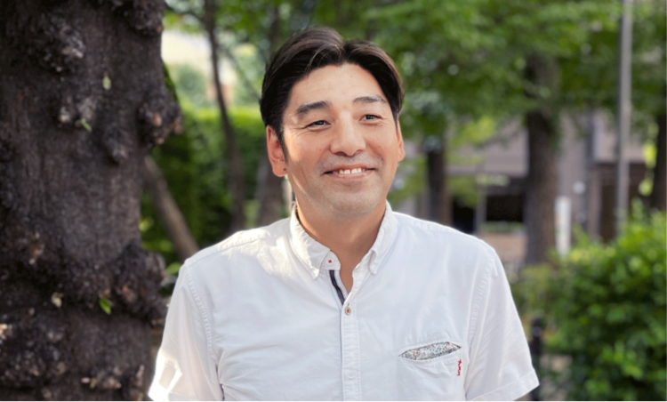
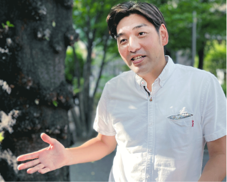

代表挨拶
「2023年のMIST solution」
化学反応
これまで「ITサービス」という視点からビジネス展開を進めてまいりました。
創業から26年目を迎え、長年の実績を評価していただき、皆様に感謝申し上げます。
しかし、これに満足すること無く、これまでのビジネスをより大切にし、より発展させていくためにも、
新たな取り組みを続けなければなりません。
これまでの延長線上にあるものだけではなく、違った視点を取り入れ、異なった業界との接点を持つことで、 「化学反応」を起こし、幅広いニーズにより的確にお応えできるよう、MISTsolutionは「進化」を遂げてまいります。
これまでの延長線上にあるものだけではなく、違った視点を取り入れ、異なった業界との接点を持つことで、 「化学反応」を起こし、幅広いニーズにより的確にお応えできるよう、MISTsolutionは「進化」を遂げてまいります。
代表取締役社長
竹内 尚平
竹内 尚平
予測不可能の時代
「VUCA（ブーカ）時代」
ブーカ時代に必要な3つの要素
その1.テクノロジーの理解と情報収集力
その2.自らの頭で考える力
その3.ポータブルスキル
VUCA時代に何が起こるのか？「想定外の出来事がなぜか次々と起こる」「業界の概念を覆す新サービスの登場」
「今まで常識だと思っていたことが非常識になる」これらの事態が現実に現れた時に適応していく力を身につけていく必要があります。
では、先ずは何を？と戸惑わなくて大丈夫です。先ずは、3つの要素を一つでも身につけていきましょう。
それを実現化していくサポートと環境を当社が用意しています。今日明日で身につくものではありませんが、
計画性を持って進んでいけば怖いものはありません。
現在はコロナによる社会への影響で問題が生じ様々な対応も進んできています。
それに伴い必要なスキルが急速に求められています。大変な時期であるのは事実です。
大学を諦めなければならなかった人も中には多くいるでしょう。
一度は夢を諦めた人もいるかもしれません。どんな時代も人類は乗り越えてきています。
私たちと一緒に、自分を信じて進んでいきましょう。
会社全体であなたの成長をバックアップします。
不透明な時代だからこそ一緒に頑張っていきましょう！
「必要とされる人材の質について」

昨今、クラウドやAI、IoTなど、様々な領域で新たな技術や活用法が次々に登場しております。
この様なデジタル変革（DX）やIT化により年々需要が高まる中、少子高齢化等の影響もあり
技術者が不足する需要ギャップが生じており、経済産業省によると2030年には最大で79万人不足すると言われております。
しかし、IT人材不足とは言えエンジニアは大勢います。では、なぜ不足と考えられるのか、そのキーワードは「人材の質」です。 「人材の質」の要素として、「プログラミングスキル」、「コミュニケーション力」、「アウトプット（成果）」が挙げられますが、 私自身も多々プロジェクトを経験し、需要に対しこちらの能力を満たす人材が不足していると体感しております。 この問題に対し、当社では未経験者含め、本人の意思、方向性、個性を重視した上で「人材の質」を考慮した育成を行っております。
しかし、IT人材不足とは言えエンジニアは大勢います。では、なぜ不足と考えられるのか、そのキーワードは「人材の質」です。 「人材の質」の要素として、「プログラミングスキル」、「コミュニケーション力」、「アウトプット（成果）」が挙げられますが、 私自身も多々プロジェクトを経験し、需要に対しこちらの能力を満たす人材が不足していると体感しております。 この問題に対し、当社では未経験者含め、本人の意思、方向性、個性を重視した上で「人材の質」を考慮した育成を行っております。

「これからの未来に向けて
MISTsolutionと共に成長していきましょう！」
MISTsolutionと共に成長していきましょう！」
取締役副社長
苫米地 文武
苫米地 文武
「必要とされる人材の質について」
昨今、クラウドやAI、IoTなど、様々な領域で新たな技術や活用法が次々に登場しております。
この様なデジタル変革（DX）やIT化により年々需要が高まる中、少子高齢化等の影響もあり
技術者が不足する需要ギャップが生じており、経済産業省によると2030年には最大で79万人不足すると言われております。
しかし、IT人材不足とは言えエンジニアは大勢います。では、なぜ不足と考えられるのか、そのキーワードは「人材の質」です。 「人材の質」の要素として、「プログラミングスキル」、「コミュニケーション力」、「アウトプット（成果）」が挙げられますが、 私自身も多々プロジェクトを経験し、需要に対しこちらの能力を満たす人材が不足していると体感しております。 この問題に対し、当社では未経験者含め、本人の意思、方向性、個性を重視した上で「人材の質」を考慮した育成を行っております。
しかし、IT人材不足とは言えエンジニアは大勢います。では、なぜ不足と考えられるのか、そのキーワードは「人材の質」です。 「人材の質」の要素として、「プログラミングスキル」、「コミュニケーション力」、「アウトプット（成果）」が挙げられますが、 私自身も多々プロジェクトを経験し、需要に対しこちらの能力を満たす人材が不足していると体感しております。 この問題に対し、当社では未経験者含め、本人の意思、方向性、個性を重視した上で「人材の質」を考慮した育成を行っております。
「これからの未来に向けて
MISTsolutionと共に成長していきましょう！」
MISTsolutionと共に成長していきましょう！」
取締役副社長
野々宮 清一
野々宮 清一